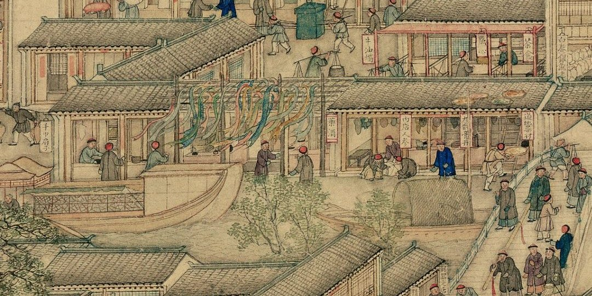
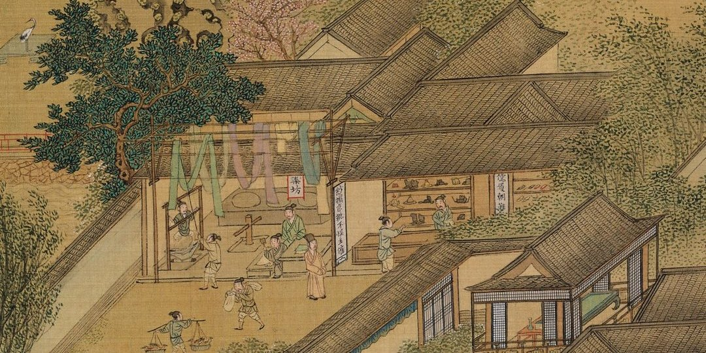
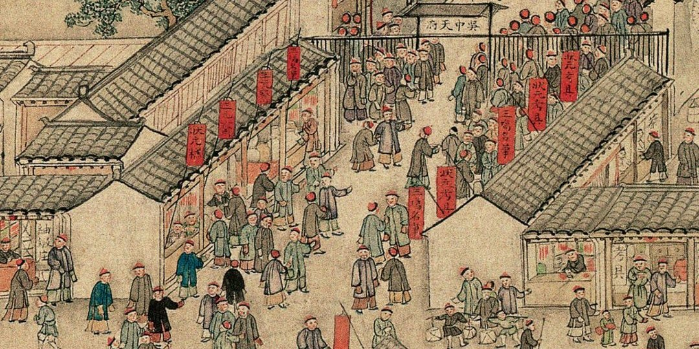
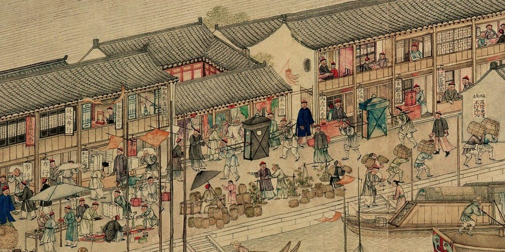
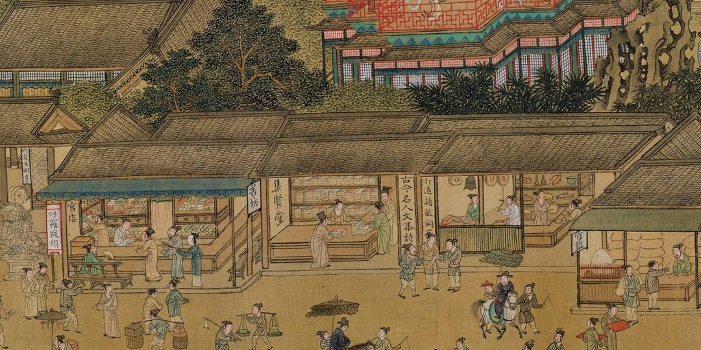

两套方案分析
同一套主体结构，两种立面态度——差别不在房子，在「皮」的浓淡
「方案一／方案二」指原方案《2026.11.12 水关廊亭及新增造型树优化设计》中的两个比选版本，两案的主张如下：
- 优化方案一（原方案 p11 起）——「溯源古画传统商铺形制，利用现代手法转译」：讲风貌协调、建筑形制与《姑苏繁华图》建筑组合关系的对应。
- 优化方案二（原方案 p24 起）——「完全复刻古画店铺形制」：忠实还原传统招牌、幌子与店肆风貌，原汁原味呈现清代阊门市井氛围。
两案共用同一套主体结构（均设二层休憩空间、外挂旋转楼梯，开窗对望阊门城墙与盛泽码头），差别只在立面形制与还原程度，并非两栋不同的房子。一句话概括：两套方案把房子的骨相都做对了，分歧只在皮。
| 比较项 | 以方案一为底 · 古画元素做点状加法 本 稿 采 用 | 方案二 · 整体完全复刻 不 建 议 采 用 |
|---|---|---|
| 体量与结构 | 不动。以现有主体结构为基础，仅改「三处立面＋两处外挂」 | 屋面组合加密，需重新复核闸站顶板荷载与柱脚反力 |
| 与居民限高 | 天然满足——中间开间不动，抱厦只做在南端 | 中间开间仍须压脊，「完全复刻」感打折 |
| 文物会「传统风貌」 | 通过界面、招幌、色彩达成，属「做法」层面的传统 | 形式最接近，但易被指「仿古过重」 |
| 可逆性 | 高——五条建议中四条为软性可拆件 | 低——屋面整体重做，一旦不满意难以退回 |
| 增量工程 | 三处立面做法＋两处外挂＋一座 12–18㎡ 抱厦 | 屋面整体重做，工程量与报批周期显著更大 |
| 内外协调 | 外壳克制，为当代业态与陈列留白 | 店外旧、店内新，反差明显；业态与橱窗受限 |
| 与评审意见 | 贴合「因地制宜、避免生搬硬套」 | 形式最接近，但易被指「生搬硬套」 |
| 结论 | 建议采用 | 建议不采用；仅作比选说明留存 |
建议以方案一的转译路子为底，方案二不建议采用。方案二截取《姑苏繁华图》西中市一带一楼二楼错落的店面段落，形制本身有依据，但仿古过重——外壳做到清代原样，后续业态、店内装修、灯光与陈列必然是当代的，「店外旧、店内新」的反差会互相拆台，也把招商与橱窗的手脚捆住。规委会「因地制宜、避免生搬硬套」指向的，恰是方案一那种转译的路子。
道理说穿了很简单：两案都把房子做对了，差别只在「皮」的浓淡；而街市的热闹，从来不靠房子。所以本稿不动主体，只在立面与街面上做点状加法——五处各有画中出处，也都可撤可换。其中招、绸、轿随时可拆，长凳为固定式但可整体撤除；只有转角抱厦是「硬」的，而它恰在居民视线的夹角之外，是全稿风险最低的一处「硬」。
为什么「看了总觉得缺点啥」
三条症结：两条在图纸上，一条在图纸以外
症结一只搬了「形」，没搬「事」
现行方案把画里的挑廊、山墙、白粉墙、博封板、檐口、檐枋、竖招、幌子都提取出来了，符号是对的，比例也克制，做得其实挺扎实。但看下来仍然「静」。
原因不在画，在取法：画里的热闹，一半发生在屋檐以外——染坊门口高挑的竹架、随风翻卷的彩绸、两人抬过街心的青布小轿、府署前满墙的红纸报帖、店前一字排开的长凳与客商。这些「事」和「色」，我们一件都没搬过来。于是建筑做对了，街市没做出来。
症结二没有标志物，而标志物从来不是体量
现在从广场望过去，房子本身做得挺好，但没有一个「一眼能认出来、值得举起手机」的东西。要造标志性，不必加高加大，只需给一样东西——在画里，那样东西是红招、彩绸和轿子。这三样都是软的、可换的、几乎不花钱的。
症结三只有空间，没有脚本
规委会纪要已经明确要求「加强阊门广场的活动策划，充分发挥公共空间效能」。空间盖好了没人来、来了没事做，是最容易被否的一种「完成」。建议这次把运营脚本和空间图纸一起交——谁在这里、做什么、说什么话、拿到什么。
五条修改建议
每条：古画依据 → 做法尺寸 → 好处；五处皆「画中取景、场中落位」，末两条视现场条件取舍
彩练当风
染坊彩绸晾布架 —— 给立面装一台「会动的机器」 壹《姑苏繁华图》染坊、绸缎铺数段，门外皆以竹木斜撑挑出高架，绸布自横杆垂落及地，风起翻卷如浪，远望是一片流动的彩色。仇英《清明上河图》染坊一段画得最清楚：竹竿咬合成斜撑、麻绳十字绑扎，架上晾青、绿长布，架下设染缸、踹布石。关键在不落地生根——向墙、向檐借力，拆装极快，正合建控地带对临时设施的要求。



| 架高 | 横杆标高 3.0–3.6m，低于主屋脊（4.05–4.83m），不与居民二层窗视线冲突 |
|---|---|
| 绸幅 | 宽 0.6–0.9m、长 2.5–3.5m，一组 6–9 幅，幅距 0.15–0.25m；成组错落下垂，避免齐平如帘 |
| 主材 | 毛竹（去青、桐油浸）或防腐木仿竹，Φ60–80；麻绳＋竹销绑扎，不用金属卡件——视觉上「古」，也让节点本身成为看点 |
| 绸料 | 真丝绡／素绉缎／仿真丝；取画中青、豆绿、藕荷、绛、月白。忌荧光色、忌高饱和、忌纯大红 |
| 抗风 关键 | ① 每幅下摆缝 150g 配重条；② 幅面每 1m 开 20mm 竖缝「泄风」，防止鼓成帆；③ 风力 ≥6 级收绸，写入运营手册并配风速预警；④ 架体与檐口抱箍处加橡胶垫，不得在木构件上开孔 |
| 照明 | 横杆内侧藏 3000K 线性洗墙灯（低位、遮光角 >60°），夜间绸面透光——这会是全场最出片的一处 |
立面上等于装了一台「会动的机器」：晾晒即生产性展示，每周换一组色系，天然形成「一周一景」，是游客复访最便宜的理由。
满街红
道前街红招群 —— 用颜色造标志性 贰《姑苏繁华图》道前街（苏州府署前）府试一段：牌坊悬「吴中天府」，沿街竞挂红纸竖招——三元斋、状元糕、三场名笔、状元考据，另有专营「考具」之铺。满街一色朱红，既是「金榜题名」的彩头，也是苏州「状元之乡」最直白的市井表情。这一段是整卷辨识度最高的街段——统一的颜色加统一的事件，且不动一寸墙体。

| 竖招 | 0.28–0.35m 宽 × 1.2–1.6m 高；木框裱绢／纸，朱红底、墨字或泥金字，下端缀短流苏；铁挑杆＋双环悬挂，出墙 0.35–0.5m，可整块取下更换 |
|---|---|
| 横匾 | 1.6–2.4m 宽 × 0.35–0.45m 高，悬于抱厦檐下（「吴中天府」） |
| 颜色 | 取朱砂／绛红，不用大红。与青灰城砖、白粉墙相配，才是「万绿丛中一点红」的画意；红色面积控制在立面总面积的 10% 以内，忌满铺 |
| 招名 | 形制 | 经营内容 |
|---|---|---|
| 状元糕 | 竖招 | 现制糕团：定胜糕、方糕、薄荷糕、酒酿饼。蒸笼出笼的白汽，就是最好的招牌 |
| 三元斋 | 竖招 | 茶食糕点、苏式糖果；呼应三元坊「连中三元」 |
| 三场名笔 | 竖招 | 湖笔、徽墨、砚台、笺纸——文房四宝 |
| 状元考据 | 竖招 | 书籍、拓片、苏州状元史料、地方志 |
| 吴中天府 | 横匾 | 抱厦檐下主匾，点明「府署在兹」的地望 |
| 金榜题名 | 竖招 | 榜帖墙：游客写名、盖「及第」朱印、当场张贴 |
| 姑苏糕团 | 竖招 | 四时糕团：青团、撑腰糕、重阳糕、糖粥 |
| 及第 | 短招 | 印章、文创、伴手礼 |
全部建议里试错成本最低的一项：不涉结构，属可更换饰面，八块招与挑杆随主体施工同步安装即可；先挂 4 块试效果，一周内可见反馈。现方案「阊门古味」这类当代命名可保留 2 块作「当代层」，其余让位给画中招——「状元糕」「三元斋」一听就懂，还能在画里指认得到。
衙役开道，抬轿入市
仪仗 ＋ 轿子 ＋ 可互动事件 —— 让街市「有事发生」 叁《姑苏繁华图》沿河街市数段，均有二人抬青布小轿穿行街心；仇英《清明上河图》中亦有轿。更值得借的是学士街—道前街一带的官府仪仗：衙役前导，举「回避」「肃静」衔牌，鸣锣开道。轿是画里唯一「会动的建筑」，牌与锣是唯一「会说话的秩序」——两者合到一处，一条街就从「布景」变成「现场」。
图证待补 衔牌一段依现场比对与画中印象，本次尚无截图可附；由文史组补录学士街／道前街仪仗段图版后再入索引，报送文本中先以文字说明，不冒充已有图证。


| 轿厢 | 0.80 × 0.80 × 1.40m；轿顶起脊带翘角，青／蓝布罩，白铜包角 |
|---|---|
| 轿杆 | 长 3.2m，与轿厢可拆连接 |
| 重量 | 竹／藤骨架＋布罩，整重 ≤35kg，可拆为两件，收纳于方案已有的「工具间」 |
| 安置 | 不落地生根、不设轨道，随时可抬可停 |
| 配置 | 人物与道具 | 做什么 |
|---|---|---|
| 日常低配 | 轿子 1 顶＋轿夫 2 名；「回避」「肃静」衔牌与铜锣常设于店前作静态陈设 | 定点站岗、定时短巡；经培训的保安可着「号坎＋现代标识」在岗，让街面日常就有一点古意 |
| 节假日高配 | 衙役 2–4 名（衔牌、铜锣）＋轿夫 2 名＋轿子；红缨帽、号坎 | 「府试放榜／官员巡街」小戏，节假日不定期上演，每次 10–15 分钟，不设固定场次 |
巡游一律不载人，开放的是定点「落轿入座」——轿杆离肩、轿底落于平整铺装加防滑支垫，全程静止不位移，风险等级接近「坐一把椅子」。坐轿不收费，用互动换资格：答题、寻招、认色可得「银票」，凭 1 张券兑一次入座（每人限一次），余票可换糕团或榜帖。不设现金、不设扫码付费，不是经营收费项目，也不参与兑换一样能逛完。互动点靠「固定岗＋兼岗＋无人点」铺开密度，不新增编制：答题由衙役、认色由商户店员兼任，自助印章台无人值守。三题只出二选一封闭题，答不出给提示、蒙对也算，目的是让人开口、停下、合影，不是把人考住。
成本最低、传播最快：一顶轿子走上广场，当天就有短视频；加上衙役与衔牌，短视频才有情节。而「凭自己挣来的票坐一回轿」，让游客从看客变成主角——这一层，是单靠装修做不出来的。
一角破局
转角抱厦 · 歇山顶 —— 给店铺一个「正脸」 肆可做性 本条为「画中形制」的落地尝试，也是全稿唯一「硬」的一处：涉及转角结构、屋面搭接与居民视线，须结合现场实测复核后再定。若现场条件受限、体量与比例做不出协调美观的效果，宁可留白，不必硬凹此造型。
仇英《清明上河图》街角一段（图版 7 红圈处）：街角不做「侧墙对路口」，而是在转角另起一座短脊小顶，脊线与主屋脱开，屋面向街心压低，山面朝内、檐面朝外——等于在转角「补」出一个正面，檐下即敞开柜台，客人站在街面上挑选。转角是最贵的位置，不能拿山墙应付；现方案两端恰以山墙面对广场台阶，等于把「背面」给了人流最密的方向。

| 屋面 | 歇山（或悬山加博风板、山花）；脊高比主屋脊低 0.6–0.8m，形成主次；檐口标高控制在 3.2–3.4m |
|---|---|
| 柱 | 木柱 Φ150–180，两根，落于台阶侧石或加宽的花箱基座；避让闸站顶板 12.5kN/m² 区 |
| 柜台 | 檐下三面敞开柜台：柜面高 0.85–0.90m、深 0.60m，柜下暗柜储物；柜上设可调层板与挂杆，货品「悬、挂、列」三种陈列并用 |
| 色彩 | 随主屋——小青瓦、栗壳色木构、白粉墙，不加彩画；抱厦只靠「形」与「位」出彩，不靠装饰 |
抱厦本身即「打卡机位」，可把广场人流引向廊架两端，缓解「中间挤、两头空」。须补一张视线校核：以居民二层窗台为视点做 45° 剖面，确认抱厦脊线不进入视野中心，随方案一并报送。
贵客请坐
店前条凳与布凉棚 —— 把「路过」变成「请坐」 伍可做性 条凳与布凉棚取自画中店前陈设，属可选件：若通行、消防或铺装条件不允许，可改为可移动的活动条凳，或只在节庆时临时摆出。摆不出协调的场面，不必硬凑。
画里店前，凡留得出空地的几乎都摆着条凳：《姑苏繁华图》市井段如此，仇英《清明上河图》书坊段更清楚——「集贤堂」凉棚下一列长凳，客商列坐闲谈，柜台临街敞开。它不只是家具，是店家给客人的位子；画里没有「顾客」一词，可每家店门口都留了坐处——门口有座，客人才算被「请」了进来。

| 条凳 | 2.4–3.0m 长 × 0.40m 深 × 0.45m 高；外观按画中条凳做足——穿榫外露、倒角手摸圆润、不做高光漆。材质不必拘泥全木：内部骨架可用耐候钢／铝合金，坐面用防腐木或木塑，耐候耐污、免年年油漆 |
|---|---|
| 安置 | 固定式，不作日常移动。以压重基座或夹固于既有花箱／台阶侧石实现稳固，配防滑垫调平——不打孔、不穿透闸站顶板防水层；整体可拆、可移走，仍属可逆做法 |
| 布凉棚 可选 | 蓝／青布，竹竿斜撑，取画中「蓝布篷」色；与彩绸架同构，共用绑扎做法，一套工法两处用 |
一条凳子确实改变不了什么结果——它不多卖一件货，也不一定多留人二十分钟。但它改的是关系的起点：门口有座，路人才敢停；坐得下来，才谈得上搭话、看货、成交。
更要紧的是，它把「服务」落在了看得见的地方。今天讲客户体验、讲「以客为先」，画里早就在做——一顶凉棚、一条板凳、一句「请坐」。苏州人做生意从待客开始，这件事在画里就有据可指，也是可以讲给游客听的一句话。
以上五条，是我们从画里找出的一些有趣元素；提这些建议，只为多提供一个看事情的角度。本稿把画里的依据、现场的条件、可以一试的做法摆在一处，供比对与取舍；至于最终怎么做、做哪几条、做到什么程度，仍以项目审定为准。